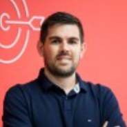

Where to focus, and what to build next
It isn't clear where to focus or what to build next, or a new phase is starting and the team isn't steering by the same number. Often it means a new business built beside the core.
Some key components. Open one for what it means and my proof.
- A clear view of today's business
- Vision, mission and values
- Launching a new line of business
- Strategy, turned into action
- Priorities, and how success is measured
“Working across functions and markets, he held the strategic picture and the operational detail at once, building teams obsessed with high standards and high-paced delivery.”

Alessandro Durì, co-founder of Pemo. We built drop-shipping across Southeast Asia together at Zalora.